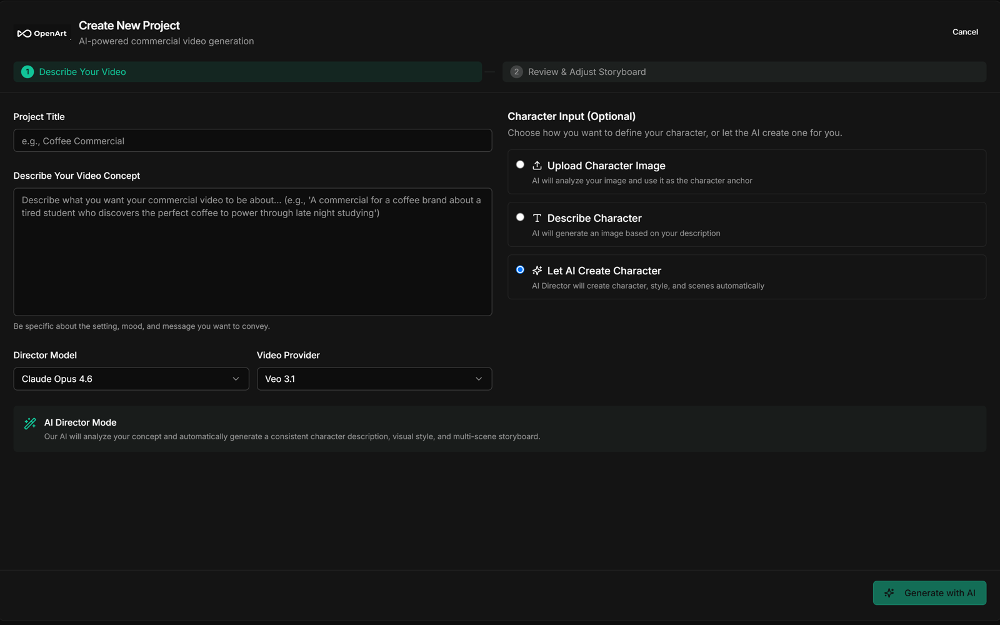

Private repository01 — Product
Text-to-video platform · shipped and handed off
OpenArt
One of the engineers on the build
A text-to-video platform that turns one prompt into a multi-scene film. An LLM director refines your concept, a storyboard module breaks it into scenes, and character anchors generated up front keep the same face and style across every shot. Keyframe extraction stitches scenes into smooth transitions; ffmpeg assembles the cut.
The interesting engineering is in the seams: framework-agnostic generation modules shared by the API and a CLI pipeline, provider-aware prompt composition (verbose for Veo, a 2,500-character budget for Kling), and long-running generation streamed to the browser over Server-Sent Events.
FastAPIReact · TypeScriptGemini / Veo 3.1KlingClaudeSSEffmpegAuto-rater evalPostgresGCS